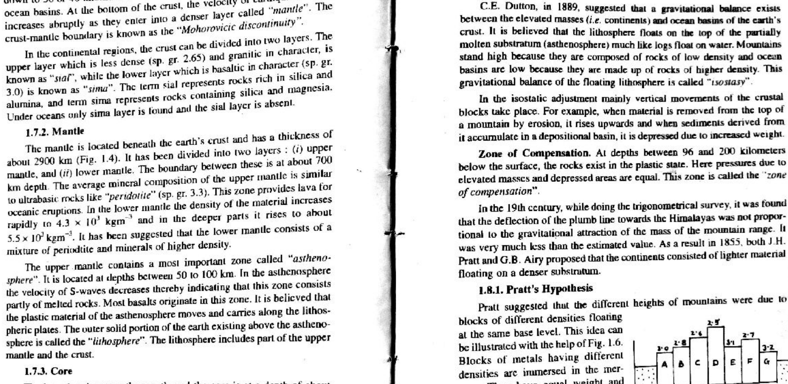

Q45: Principles of Isostasy: Gravitational Balance & Archimedes Buoyancy
45.1 Physical Foundation of Isostasy
In global geophysics and geodynamics (A.B. Watts, 2001, Isostasy and Flexure of the Lithosphere; Fowler, Ch. 5; Lowrie, Ch. 2), isostasy (from Greek isostasios, "equal standing" or "equal balance", coined by C.E. Dutton in 1889) is the condition of gravitational equilibrium between the Earth's rigid lithosphere and the ductile, denser asthenospheric mantle beneath it:
$$\sum \mathbf{F} = 0 \iff \mathbf{F_{\text{buoyancy}} = F_{\text{gravity}}}$$According to Archimedes' Principle of buoyancy, a floating lithospheric block displaces a mass of asthenospheric fluid equal to its own total weight:
$$F_g = M_{\text{lith}} g = (\rho_c A h_t) g$$ $$F_b = M_{\text{displaced mantle}} g = (\rho_m A r) g$$At isostatic equilibrium:
$$\rho_c h_t = \rho_m r \implies r = h_t \left(\frac{\rho_c}{\rho_m}\right)$$Where $\rho_c$ is crustal density, $\rho_m$ is mantle density, $h_t$ is total crustal column height, and $r$ is the depth of the submerged crustal root.
45.2 Classical Models of Isostatic Compensation
| Isostatic Model | Fundamental Mechanical Assumption | Compensation Mechanism | Geological Analogy |
|---|---|---|---|
| Airy Isostasy (1855) | Constant crustal density ($\rho_c = \text{const}$); variable crustal thickness. | High topography is compensated by deep, low-density crustal roots extending into denser mantle. | Icebergs floating in water; blocks of wood with different heights. |
| Pratt Isostasy (1855) | Uniform depth of compensation ($D = \text{const}$); variable crustal density. | High mountains have lower density ($\rho_1$), while low oceanic plains have higher density ($\rho_2$). | Blocks of different metals (copper, iron, lead) floating in mercury to the same depth. |
| Vening Meinesz (1931) | Flexural isostasy; lithosphere acts as an elastic plate with finite flexural rigidity ($D_f$). | Loads are supported regionally by flexural bending of the elastic plate rather than local columns. | Himalayan foreland basin flexure; volcanic seamount chains. |



Correct Answer: (A) A buoyancy force pushing the lithosphere up equals the gravitational force pushing it down. — By definition, isostatic equilibrium is achieved when the upward hydrostatic buoyancy force of the asthenosphere precisely balances the downward gravitational weight of the lithospheric column.
Option-by-Option Critical Dissection
- (A) A buoyancy force pushing the lithosphere up equals the gravitational force pushing it down — CORRECT: The exact definition of hydrostatic and isostatic balance ($\sum F_y = 0$).
- (B) A buoyancy force pushing the lithosphere up is less than the gravitational force pushing it down — INCORRECT: Represents an under-compensated state where the lithosphere must actively subside (negative isostatic anomaly).
- (C) A buoyancy force pushing the lithosphere up is greater than the gravitational force pushing it down — INCORRECT: Represents an over-compensated state resulting in ongoing post-glacial isostatic rebound/uplift.
- (D) All the features of Earth's surface are at the same elevation — INCORRECT: Isostasy explicitly explains why the Earth exhibits diverse surface elevations (mountains vs. ocean basins) due to variations in crustal thickness and density.
High-Yield Airy Isostasy Calculation Problem
A mountain range rises $h = 4.0\text{ km}$ above sea level. Assuming standard continental crust of density $\rho_c = 2.8\text{ g/cm}^3$, standard sea-level crustal thickness $T_0 = 30\text{ km}$, and mantle density $\rho_m = 3.3\text{ g/cm}^3$, calculate the depth of the crustal root ($r$) extending into the mantle beneath the mountain range.
Solution:
1. Under Airy isostatic compensation, the pressure at the depth of compensation beneath the mountain column equals the pressure beneath the sea-level column:
$$(h + T_0 + r) \rho_c = T_0 \rho_c + r \rho_m$$ $$h \rho_c + r \rho_c = r \rho_m \implies h \rho_c = r (\rho_m - \rho_c)$$ $$r = h \times \frac{\rho_c}{\rho_m - \rho_c}$$2. Substitute the values:
$$r = 4.0\text{ km} \times \frac{2.8}{3.3 - 2.8} = 4.0 \times \frac{2.8}{0.5} = 4.0 \times 5.6 = \mathbf{22.4\text{ km}}$$3. The total crustal thickness beneath the mountain is $T_{\text{total}} = h + T_0 + r = 4.0 + 30.0 + 22.4 = \mathbf{56.4\text{ km}}$, demonstrating why collisional mountain belts possess deep crustal roots.